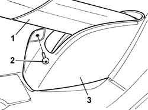

3380A44 HANDBRAKE/LINKAGE PROTECTION - R+R
- Path
- Procedures > 33 BRAKES > 3380 HANDBRAKE > 3380A HANDBRAKE CONTROL AND LINKAGE > 3380A44 HANDBRAKE/LINKAGE PROTECTION - R+R
- Kind
- repair procedure (removal / refitting; the operation number is the code)
- Applies to
- all engines; all production periods
- Interactive page
- https://sloeber94.github.io/elrnDB-fUlss/en/#/179007345
Applies to: all engines; all production periods
 Removing
Removing
 Refitting
Refitting- Place the seat in the front end of travel position.
- Raise the seat completely.
1. Place the handbrake lever in the upper end of travel position.
2. Undo the bolt fixing the handbrake lever guard.
3. Remove the handbrake guard.

Applies to: all engines; all production periods
Refitting
Removing- Fit the handbrake guard.
- Tighten the bolt fixing the handbrake lever guard.
- Place the handbrake lever in the lower end of travel position.
- Place the seat in the correct driving position.